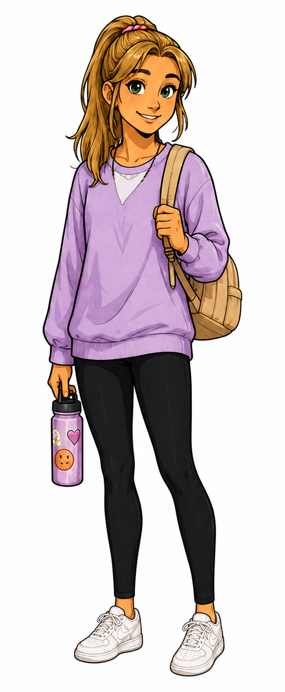

What Emma brings
- Notices changes, warning signs, and overlooked details.
- Keeps useful supplies and information close at hand.
- Shows how awareness supports safe decisions.

Meet the Crew
The one who keeps everyone prepared.
Organized, calm under pressure, and safety-minded. Emma thinks ahead and makes sure the crew has what it needs.
“Did anyone else notice that?”
First appearance: Adventure 2 — Zoo Day
Preparation matters, but she is learning to trust the crew and avoid carrying every responsibility herself.
She catches what Alex misses, tempers Tyler's impulse to rush, and works naturally with Maya's planning style.